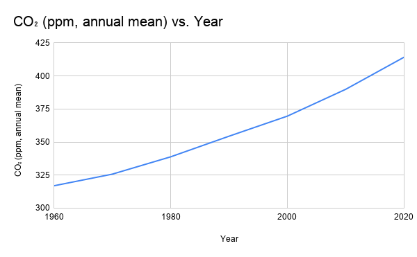

Lithosphere


The carbon cycle is the process by which carbon is moved between the four different spheres of our planet: the atmosphere(the stuff in the air), the biosphere(living things), the lithosphere(the stuff in the earth), and the hydrosphere(the ocean). In natural conditions, the lithosphere, the biosphere, and the hydrosphere all have things that act as carbon sinks, taking carbon out of the atmosphere and storing it. This prevents the atmosphere from building up too much carbon and heating up too much. However, this natural process has been disrupted by human activities as we are burning fossil fuels and forests releasing carbon dioxide into the atmosphere. This is causing climate change and disrupting the natural processes of our planet. This diagram shows some of the various processes that move carbon throughout the four spheres and explains one way that human activities have caused disastrous effects.
Wildfires release carbon dioxide into the atmosphere through the process of combustion. Combustion is a chemical reaction that occurs when you have fuel, oxygen, and heat. In the case of wildfires, the fuel is all of the plant matter(glucose) that is in the forest, the oxygen is in the air all around the fire, and the heat is generated initially by something like a lightning strike but later by the fire. As the carbon in the plant matter reacts with the oxygen in the air, it produces carbon dioxide and water. Whenever a wildfire occurs, it releases a large amount of carbon dioxide into the atmosphere. This contributes to the greenhouse effect which is increasing the average temperature of the Earth. It does this by trapping heat that would otherwise escape into space. When more heat gets trapped in the atmosphere it causes the temperature of the Earth to rise. When the temperature is hotter then conditions are better for wildfires to occur. This leads to more wildfires occurring which leads to a feedback loop as more wildfires release more carbon dioxide which leads to more heat which leads to more wildfires.

Plants absorb carbon dioxide from the atmosphere and convert it into oxygen and glucose through photosynthesis. They do this to produce ATP to power their cells.
The ocean acts as a carbon sink absorbing carbon dioxide from the atmosphere. When carbon dioxide is absorbed by the ocean, it dissolves and forms carbonic acid.
Fossil fuels like coal, oil, and natural gas are formed from the remains of ancient plants and animals. Humans extract these from the ground and burn them, releasing carbon dioxide into the atmosphere.
Erosion occurs when wind and water wear down rocks and the ground. This can release carbon into the ocean as the matter gets washed into the ocean.

This chart demonstrates how the amount of carbon in the atmosphere has increased over time from 1960 to 2020 by measuring carbon in parts per million (ppm).